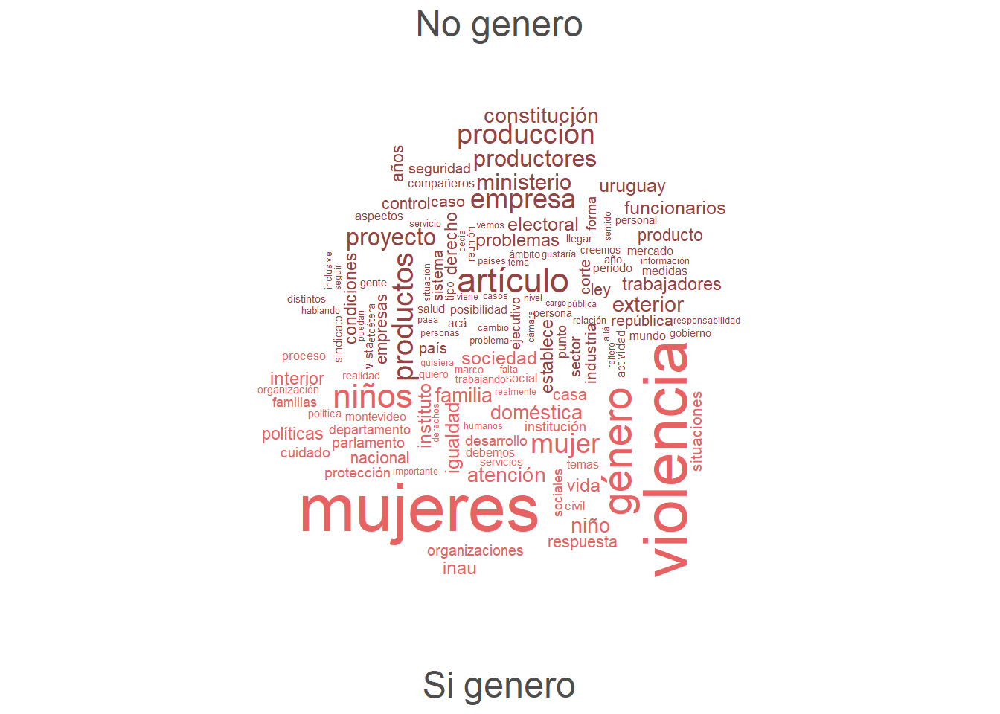

Este post surge a partir de la idea de aplicar algunas técnicas de minería de texto y clasificación con aprendizaje automático (o machine learning) para análisis masivo de datos cualitativos usando R, de una temática que me interesaba particularmente como es el discurso político de género. Considero que la minería de texto es un área que aún no se encuentra tan difundida en Uruguay, que tiene mucho potencial y que puede ser aprovechada desde las ciencias sociales como aporte para sumar o complementar las herramientas metodológicas más tradicionales.
El objetivo general del trabajo es lograr un buen método de clasificación de texto que me permita distinguir entre las intervenciones parlamentarias en la Cámara de representantes (unidad mínima de análisis) que planteen y discutan la temática de género para luego analizar mediante variables anexas, qué representantes, partidos, sectores son los que instalan la discusión en dicha materia 1.
El post se va a estructurar en cuatro partes:
En lo que respecta a la fuente de datos, mi primera inspiración estuvo en este post de 2018 de d4tagirl que trataba sobre la obtención de datos directamente desde internet (web scraping), de las sesiones parlamentarias (cuyas transcripcioes son de libre acceso) y análisis de las frecuencias de las sesiones, visualización de las palabras más relevantes, análisis de sentimiento, etc.
Luego de esto, en 2019 se desarrolla por parte de un equipo2 de la Facultad de Ciencias Sociales (UdelaR), el paquete speech, el cual permite descargar las sesiones parlamentarias de forma fácil y ordenada, agregando a los discursos algunas variables anexas como la legislatura, el nombre (lo cual me permite rastrear algunas características), la fecha de la sesión, entre otras. Esto me facilitó mucho el trabajo de recolección de información inicial 🙇♀ !.
Para el análisis, decidí acotar el universo a los discursos e intervenciones de lxs diputadxs (ya que incluir ambas cámaras era un volúmen demasiado grande de información!), correspondientes a la legislatura pasada: XLVIII (2015-2020). La transcripciones taquigráficas de las sesiones parlamentarias se encuentran en archivos formato pdf en la página del parlamento, en la cual se pueden hacer búsquedas manuales según legislatura, fechas, identificadores de sesión y Diario, etc. Lo que yo necesitaba entonces era obtener todas las transcripciones del período, las cuales metiante una búsuqueda simple filtrando la legislatura, sólo para la Cámara de representantes asciendían a 308 Diarios de sesiones.
Como primer paso para la obtención de la información debía recolectar todas las rutas a los archivos pdf lo cual me permitiría aplicar la función speech_build() del paquete speech y transformar la información que se encuentra en pdf en un data frame ordenado.
Una opción válida, pero ineficiente, hubiera sido copiar “a mano” las 308 rutas a cada uno de los pdf, sin embargo indagando un poco en el post de d4tagirl sobre web scraping (recomiendo!) y en foros, agregué alguna cosa y llegué a una solución para automatizar la recolección considerando incluso que, dada la cantidad, los mismos se encuentran desplegados en diferentes páginas.
#Cargo paquetes:
library(dplyr) #manipulación
library(rvest) #web scraping
library(purrr) #iteración
##creo un objeto "ruta" que es el url raíz para luego pegarle la terminación según el número de página del cual me interesa objeter las url a los pdf.
ruta= "https://parlamento.gub.uy/documentosyleyes/documentos/diarios-de-sesion?Cpo_Codigo_2=D&Lgl_Nro=48&DS_Fecha%5Bmin%5D%5Bdate%5D=15-02-2015&DS_Fecha%5Bmax%5D%5Bdate%5D=14-02-2020&Ssn_Nro=&TS_Diario=&tipoBusqueda=T&Texto="
paginas=as.character(c(0:7)) ##defino la cantidad de paginas, en este caso 8 (del 0 al 7)
##creo un objeto "url" dónde me va a guardar el vector de las 308 rutas que necesito!
url <- map(paginas,~ paste0(ruta, "&page=", .))%>% #pego el pedazo de ruta para hacer referencia al número de página
unlist() %>%
map(~ .x %>% ## con la función map() de purr, ítero a lo largo del vector "paginas"
read_html() %>% ##función de rvest para obtener contenido en formato html
html_nodes(".views-field-DS-File-IMG a") %>% #identifica qué parte o nodo específico me interesa
html_attr("href") %>%
map(~ paste0("https://parlamento.gub.uy", .)))%>%
unlist()En este punto lo que tengo es un vector con 308 elementos, en el cual cada uno es una ruta a un Diario de sesión en formato pdf. Luego, aplico la función speech_build() para que ordene en un data frame todas las intervenciones contenidas en cada uno de los Diarios, con información anexa como ya lo mencioné.
#Cargo paquetes:
library(speech) #scraping parlamentario
#aplico la función speech_build() iterando sobre cada una de las rutas y alojandolo en un objeto "discursos_diputadxs"
discursos_diputadxs <- map(url,possibly(speech_build,otherwise = NULL))
#Importante: acá tuve algún problema grande con pdf en los cuales no se podían identificar intervenciones y me cortaban el proceso, lo cual solucioné con la función possibly() de purr, la cual omite el error y continúa aplicando la función. Al final de este proceso (que demora bastante!), obtuve una base con 23990 intervenciones para todo el período. Cabe aclarar que la función speech_build() tiene un argumento quality que te permite, mediante un par de indicadores, dar cuenta de la calidad de la conversión a partir de la proporción del documento que pudo ser recuperado. También otro argumento que permite agregar o compilar la información por legislador, en este caso obtuve cada mención por separado.
Hasta este momento tenía una gran base de todas las intervenciones de la legislatura pasada en bruto y que necesitaba clasificar en aquellas que trataban la temática de género y aquellas que no. Debía conseguir entonces documentos que hablaran de género y otros que no, así podía aplicar un modelo que aprendiera a distinguir entre estos dos discursos y me permitiera clasificar las intervenciones (machine lerning o aprendizaje automático).Para esto podría haber etiquetado de forma artesanal las intervenciones que trataran la temática de género y aquellas que no, pero me implicaba mucho tiempo (que no tengo!) y entonces se me ocurrió una idea💡: en la pagina del parlamento hay unos documentos de las transcripciones de las diferentes comisiones temáticas que integran lxs propixs parlamentarixs y existe una específica de Equidad y género con 28 documentos disponibles, por lo que con la misma técnica anterior, elaboré una base de datos con todas las intervenciones de dicha comisión y otra base con intervenciones de diferentes comisiones parlamentarias con temas variados: presupuesto, hacienda, asuntos internacionales, salud, turismo, ambiente, etc.
Finalmente, construí una base que servirá de entrenamiento con ambos tipos de intervenciones y una variabla de agregación llamada genero con dos valores: Si genero / No genero.
En este momento necesitaba aplicar algunas funciones que me permitieran limpiar el texto y quedarme con lo que realmente me interesa y que me permite distinguir entre palabras que dan cuenta de un discurso que hace referencia a la temática de género y aquellos que no. Este es un trabajo que lleva mucho tiempo (tal vez el que más!), mucho ensayo y error, y a veces resulta tedioso, pero es el más importante para que los resultados tengan sentido y lograr hacer una buena clasificación y análisis posterior.
En un primer momento esto lo hice para la base de entrenamiento que incluía intervenciones de las comisiones, las cuales alojé en un corpus dónde cada una es un elemento del mismo. El resultado de este paso será una una matriz de términos (en este caso palabras, pero podrían ser expresiones también!) que se denomina document-feature matrix (dfm) en el paquete quanteda que es el que voy a utilizar. Esta matriz contiene tantas filas como elementos del corpus haya (en este caso intervenciones) y tantas columnas como términos, en las celdas se encuentra la frecuencia de aparición de cada término en cada intervención.
Como primer paso para llevar a cabo la limpieza, me interesa eliminar todas las intervenciones que cuenten con menos de 13 palabras ya que, según he leído, corresponden con expresiones o asuntos de órden ( “Pido la palabra”, “Voto la moción de…”, etc.) que no me dicen nada para mi análisis. Esto lo hago en un primer momento con la función corpus trimsentences() al momento de crear el corpus y decirle la variable en dónde se encuentra el discurso ( speech en este caso).
En un segundo momento, aplico la función dfm() al corpus previamente creado para limpiar y construir la matriz. Para esto, uso un vector que tengo pre-cargado y que llamo palabras_drop y que me ayudan a eliminar términos que no me interesan, el cual contiene:
En el código explico cada paso:
#Cargo paquetes:
library(quanteda) #minería de texto
entrenamiento <- quanteda::corpus(train,text_field = "speech")%>%
quanteda::corpus_trimsentences(min_length = 13) # quito las intervenciones que tienen menos de 13 palabras
entrenamiento_dfm <- quanteda::dfm(entrenamiento,
tolower = TRUE, #transforma todo a minúscula
remove_punct = TRUE, #elimina puntuación
remove_numbers = TRUE, #elimina números
remove = c(stopwords::stopwords("spanish"),palabras_drop), #elimina stopwords pre-cargadas en quanteda y palabras específicas de interés
verbose = TRUE) %>% #imprime un resumen del proceso
quanteda::dfm_remove(min_nchar=3)%>% # elimino las palabras que tienen 1 y 2 caracteres
quanteda::dfm_trim(min_termfreq = 90) #le indico que se quede con téminos que aparezcan al menos 90 veces (Esto se va calibrando en la marcha!). Me permite sacar los términos que se usan muy poco. Acá me interesa ver si me está agregando bien las palabras y hago una nube de palabras con la función textplot_wordcloud(), para ello le defino la variable genero como de agrupación y el argumento comparison=T para mostrar la segmentación.
quanteda.textplots::textplot_wordcloud(quanteda::dfm(entrenamiento_dfm, groups = "genero"), min.count = 10,max_words = 300,random.order = TRUE,rot.per = .25, colors = c("#954342","#e76363"),comparison = T)
Me quedo conformé con las palabras que me muestra!
El aprendizaje automático (o machine learning) es un procedimiento que permite automatizar algunas operaciones reduciendo la necesidad de intervención de un ser humano, a partir de la identificación o aprendizaje de ciertos patrones según parámetros determinados y posterior predicción en otro conjunto de datos.
En este caso, tengo la matriz de téminos creada a partir de mi base de entrenamiento (creada en el punto 1) y categorizada con la variable “genero” de forma equilibrada según si las mismas fueron realizadas en la Comisión de Equidad y género o en otras comisiones temáticas. Ahora tengo que aplicar un modelo que permita aprender qué términos distinguen entre un discurso que trata género y uno que no. Para ello existen diferentes tipos de técnicas y modelos, más sencillos y más complejos, en este caso usaré el modelo predictivo de clasificación llamado Random forest (o bosques aleatorios en español), con el paquete random Forest. Para ello, creo dos grupos aleatorios para entrenar y testear el modelo, todo dentro de la matriz de términos ya creada. Para definir con qué modelo me quedo, pruebo diferentes opciones de parámetros y evalúo según la precisión en la predicción.
#Cargo paquetes:
library(randomForest) #correr modelo
library(tidymodels) #lo uso sólo para crear grupos para entrenamiento y prueba
##primero convierto la matriz en un data frame
entrenamiento_dfm <- entrenamiento_dfm %>%
convert(to = "data.frame")%>%
mutate(genero=docvars(entrenamiento_dfm, "genero"))
set.seed(23) #hago reproducible la selección aleatoria
genero_split <- initial_split(entrenamiento_dfm, strata = genero) ##divide aleatoriamente según un estrato, acá es genero y genera dos sub grupos: entreno y testeo
entreno <- training(genero_split)
testeo <- testing(genero_split)
##Con la variable randomForest se aplica el algoritmo y guardo el modelo
modelo <- randomForest(genero ~ ., data=entreno)
##OOB
#0.1582538
##lo uso para predecir en los grupos: entreno y testeo
prediccion_entreno <- predict(modelo, newdata=entreno)
prediccion_testeo <- predict(modelo, newdata=testeo)
##Evalúo el modelo
##veo la matriz de confusión y veo en cuantos predijo bien y en cuantos no
# table(entreno$genero, prediccion_entreno)
# prediccion_entreno
# No genero Si genero
# No genero 372 1
# Si genero 23 337
#accuracy 96.7%
# table(testeo$genero, prediccion_testeo)
# prediccion_testeo
# No genero Si genero
# No genero 111 13
# Si genero 31 88
#accuracy 81.9%Luego de tener este modelo y ver que funciona bastante bien, lo que hago es cargar mi base de las intervenciones de todxs lxs diputadxs, aplico una limpieza similar al punto 2 y me quedo con las sentencias y palabras que me sirven en una matriz de términos. En esta limpieza, de 23990 intervenciones paso a 13437, poco más de la mitad.
Luego me quedo con los términos coincidentes en ambos casos y predigo en mi base sin clasificación alguna.
##me quedo con los términos coincidentes entre la base que usé para predicir y la que quiero predecir
entrenamiento_dfm_final <-data.frame(entreno[,colnames(entreno)%in%colnames(diputados_dfm)])
diputados_dfm_final <- data.frame(diputados_dfm[,colnames(diputados_dfm)%in%colnames(entreno)])
##hago la predicción
prediccion_todo <- predict(modelo, newdata=diputados_dfm_final)
#lo convierto en data frame y filtro los que fueron predecido como "Si genero"
sigenero <- diputados%>%
convert(to = "data.frame")%>%
mutate(genero=prediccion_todo) %>%
filter(genero="Si genero") En este momento tengo una base con una clasificación entre: Si genero / No genero generada a partir de la aplicación del algoritmo random forest con intervenciones que tocan la temática de género. En este punto, podríamos comenzar el análisis viendo como se sub divide entre partidos, legisladorxs, etc, pero tomo algunas intervenciones y, más allá de que muchas están bien clasificadas, veo que algunas tocan el tema pero muy tangencialmente o se entran en la proporción de error del modelo y directamente no hablan del tema, por lo que se me ocurre la idea de afinar un poco más la clasificación y combinar con la técnica de diccionario de quanteda, considerando los 50 téminos más usados en mi base de entrenamiento (limpia) para el grupo Si género como un diccionario a aplicar a mis intervenciones pre-clasificadas.
##top términos por grupo
dicgenero <- entrenamiento_dfm %>%
quanteda::topfeatures(50,groups = "genero")
dicgenero <- rownames(as.data.frame(dicgenero[[2]]))
##lo convierto en diccionario (formato lista) con la función dictionary()
idc_dicgenero <-dictionary(list(genero=dicgenero))
##aplico la función dfm_lookup() para evaluarlo en un dfm nuevo sólo de la base pre-clasificada
midic_result_dicgen <- data.frame(dfm_lookup(sigenero_dfm,dictionary=idc_dicgenero))
base_final <- sigenero %>%
left_join(y=midic_result_dicgen,by="doc_id")%>%
filter(diccionario>=30)Luego de aplicar el diccionario, opto por quedarme con aquellas intervenciones que tienen >=30 palabras del mismo y así asegurarme que están bien clasificadas. Luego de esto al fin llego a una base final con 745 intervenciones que tratan género 😄!
Para mi análisis necesito dar cuenta del género de lxs diputadxs, el partido, sector, etc, por lo que la variable que lxs identifica, toma unicamente el primer apellido que se encuentra en la trascripción, por lo que tuve que hacer un trabajo artesanal de identificar a qué legisladorxs se refería y pegar ese dato con la información anexa que me interesa (me complicaron mucho los apellidos repetidos: Rodriguez, Cardoso, Umpiérrez, Viera y algunos más)
En este apartado presento algunos datos generales que se desprenden de mi base de menciones sobre género.
En primer lugar, observando la evolución de menciones sobre el tema se registra un aumento de las mismas hacia el final de la legislatura, con diferencias entre partidos.
Evolución de las menciones en el tiempo por partido político
Menciones por partido político
Si vemos la distribución de las menciones relativas al género por partido político en términos absolutos, vemos que el Frente Amplio es el que cuenta con más menciones ( 364), seguidas por el Partido Nacional ( 230).
Menciones por género
Si nos centramos en el género de lxs legisladorxs, el 56.5% de las intervenciones son de varones y el 43.5% por mujeres. Sin embargo, si relativizamos por la cantidad de mujeres y varones diputadxs vemos que la cantidad de menciones por legisladorx es mayor en el caso de las mujeres con respecto a los varones, de hecho podemos decir que las diputadas mujeres hablan 1.3 más que los varones.
Legisladorxs
Por último, queremos ver qué legisladorxs son lxs que tienen más intervenciones referidas al género y observamos que, a pesar de que el Frente Amplio era el partido que registraba más menciones absolutas, quienes acumulan más intervanciones referidas al tema son diputadas del Partido Nacional y Partido Colorado. También vemos que, entre lxs 10 principales, la gran mayoría son mujeres, esto ratifica la idea de que las mujeres son las que más instalan la temática de género, reafirmando la necesidad de paridad y participación equilibrada en la representación parlamentaria.
Espero que les haya gustado y servido, seguro que existen muchas cosas por mejorar y mucho potencial aún para ahondar y enriquecer la investigación social a partir del análisis del texto y de la palabra.
En este punto cabe aclarar que se hace un análisis del tratamiento de la temática sin valoraciones positivas o negativas en los discursos, lo cual podría eventualmente analizarse mediante la técnica de análisis de sentimento.↩︎
Nicolas Schmidt [aut, cre], Diego Lujan [aut], Juan Andres Moraes [aut]↩︎